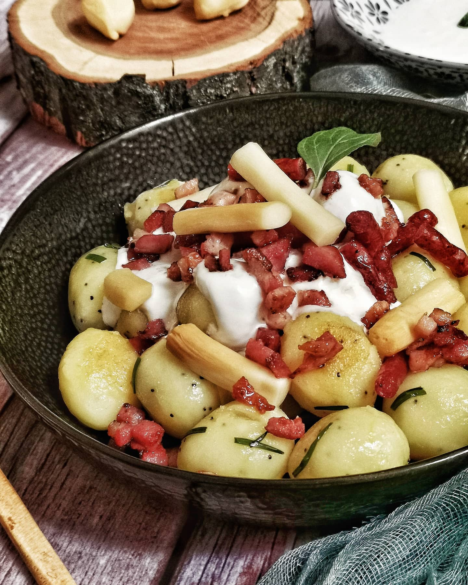

Džatky podľa @ketrin__zeta — Normy Jedál
Dnes inšpirácia od kamoša profi kuchára @daniel.hamrak džatky :) zemiakovo makové cesto, opražené na masle s pažítkou, navrchu smotana, opečená slaninka a mini klobásky a k tomu údený syr 👌👌
#obed #lunchtime #dnesjem #dnesvarim #trnava #trnavagirl #slovakiagirl #slovakia #varim #varimeslaskou #dnesvarimja #instafood #instalunch #dzatky #poppy #potatos #bacon #sausage #cream #chive #chefstime #smokedcheese #udenysyr #slanina #klobasa #kyslasmotana #pazitka